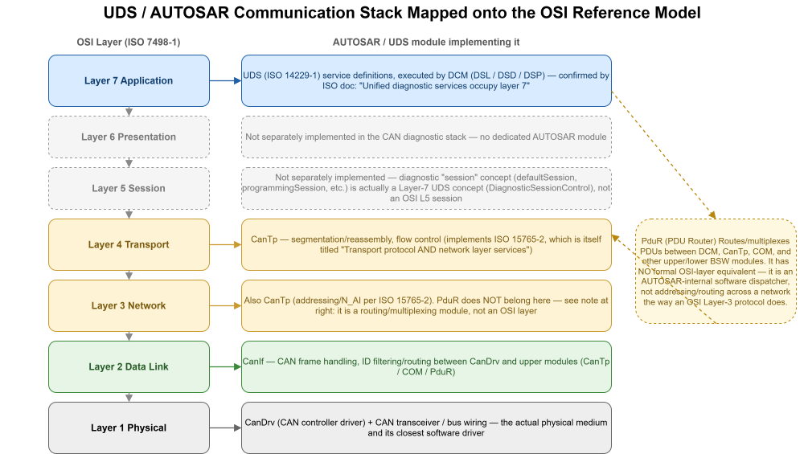
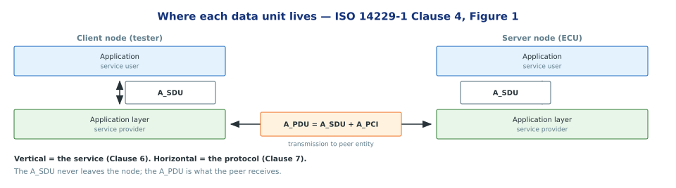
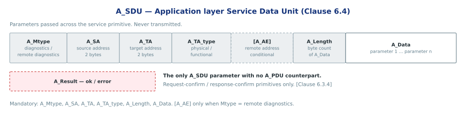
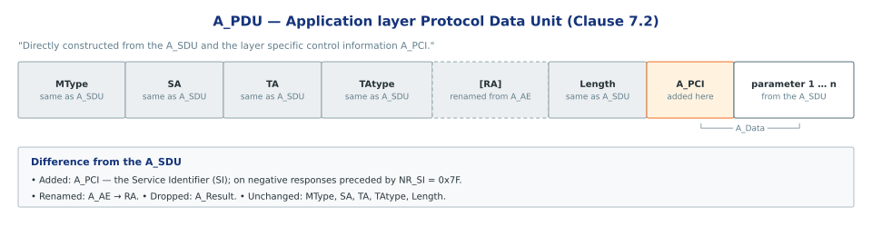
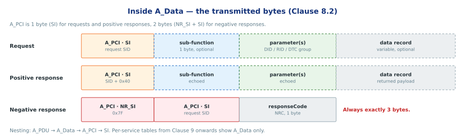
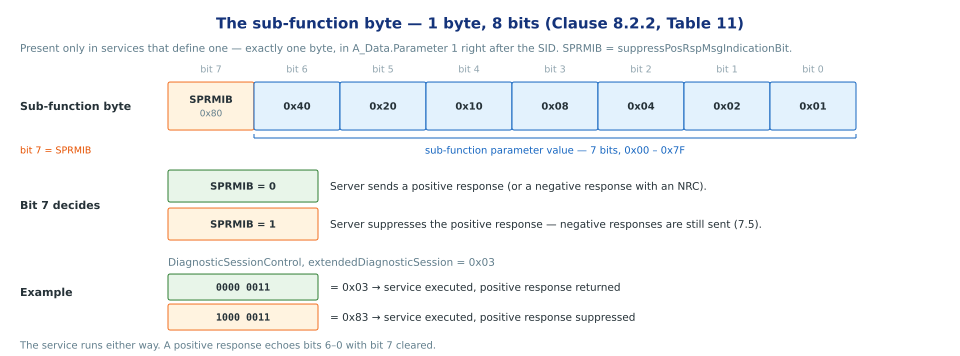
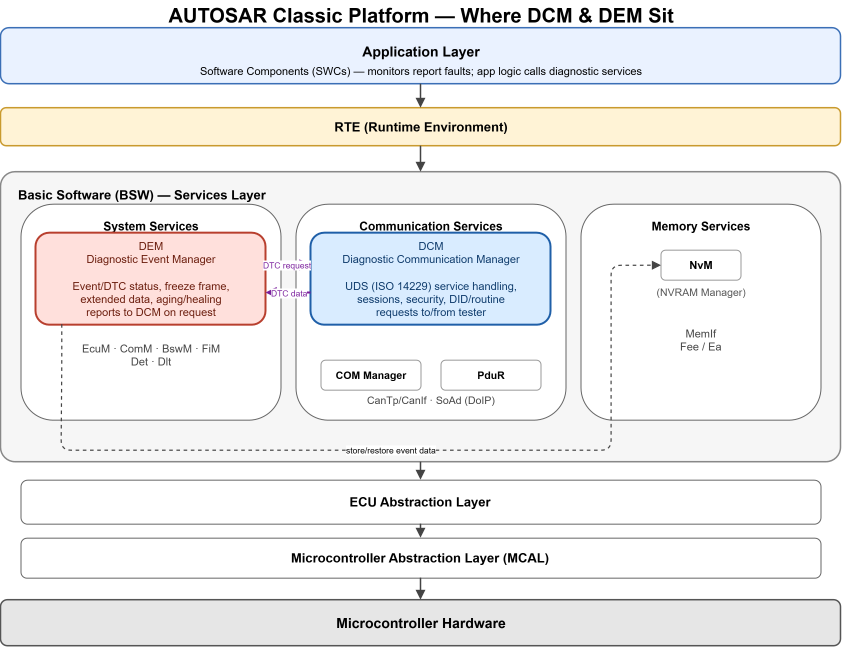
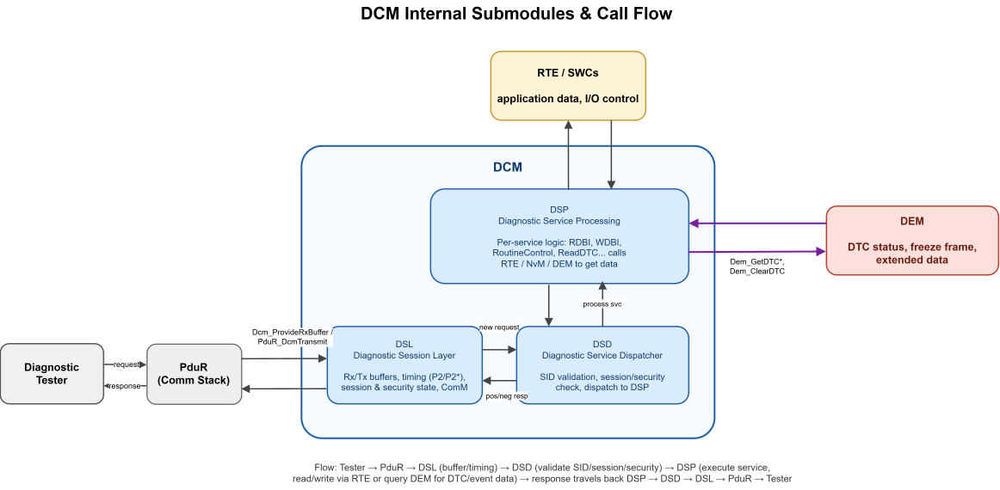
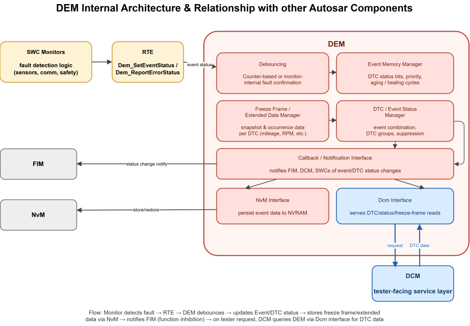

ISO 14229-1 — Unified Diagnostic Services
Application-layer diagnostics for automotive ECUs
Source — ISO 14229-1:2013(E) · companion to ISO_14229-1_UDS_Overview.md
Section
Section 1 — Foundations
Source — ISO 14229-1:2013(E) · companion to ISO_14229-1_UDS_Overview.md1 / 24
What UDS is
- Application-layer protocol for diagnostic communication with ECUs.
- Defines services, request/response formats, and behavioural rules.
- Transport-independent — CAN, LIN, FlexRay, Ethernet, K-Line.
- Defines the protocol only, not how an ECU implements it.
Note — Everything downstream — AUTOSAR Dcm/Dem, OEM diagnostic specs — implements this document.
Source — ISO 14229-1:2013(E) · companion to ISO_14229-1_UDS_Overview.md2 / 24
Client–server model
- Client = diagnostic tester, usually off-board.
- Server = a function inside an ECU, not the ECU itself.
- Client requests a service; the server validates, executes, then answers — positive response, negative response with an NRC, or nothing when the positive response is suppressed.
- Response behavior follows rules Figure 5, 6 Clause 7.5, followed by check on mandatory fields (ServiceId, Subfunction) in UDS request message.
- One diagnostic protocol instance per server — one request at a time, held until the final response is sent. One diagnostic protocol instance can only handle one request at a time
- Roles are independent of the data link. Multiple clients may exist.
Clause 1 Scope; 6.1; server response rules 7.5.2, 7.5.6
Note — There is no general server response behaviour available for request messages without sub-function parameter (7.5.4.1) — each such service defines its own response table.
Source — ISO 14229-1:2013(E) · companion to ISO_14229-1_UDS_Overview.md3 / 24
Where UDS sits in the OSI stack

- UDS = layer 7. The data link provides layers 1–6.
- ISO 14229-2 at the session layer; ISO 15765-2 / 13400-2 span transport and network.
- Module placement below layer 7 is AUTOSAR convention, not ISO text.
Introduction, Table 1
Source — ISO 14229-1:2013(E) · companion to ISO_14229-1_UDS_Overview.md4 / 24
Section
Section 2 — Services
Source — ISO 14229-1:2013(E) · companion to ISO_14229-1_UDS_Overview.md5 / 24
Services are grouped into functional units
- 6 functional units are described in ISO14229-2013, one clause per function unit from Clause 9->14
| Clause | Functional unit |
|---|---|
| 9 | Diagnostic and Communication Management |
| 10 | Data Transmission |
| 11 | Stored Data Transmission |
| 12 | InputOutput Control |
| 13 | Routine |
| 14 | Upload Download |
- Each functional unit may provide one or several services.
Clause 9.1, Table 22
Source — ISO 14229-1:2013(E) · companion to ISO_14229-1_UDS_Overview.md6 / 24
Diagnostic and Communication Management — the 10 services
- Provide 10 services:
| Service | What it does |
|---|---|
| DiagnosticSessionControl | Enables a diagnostic session |
| ECUReset | Forces a server reset |
| SecurityAccess | Unlocks restricted data and services |
| CommunicationControl | Switches message classes on/off |
| TesterPresent | Signals the client is still connected |
| AccessTimingParameter | Reads/changes communication timing |
| SecuredDataTransmission | Transmits in cryptographically secured mode |
| ControlDTCSetting | Stops/resumes DTC status bit updating |
| ResponseOnEvent | Runs a service automatically on an event |
| LinkControl | Reconfigures the link, e.g. baudrate |
Table 22; per-service descriptions 9.2.1 – 9.11.1
Source — ISO 14229-1:2013(E) · companion to ISO_14229-1_UDS_Overview.md7 / 24
DiagnosticSessionControl service
- A service provided by DCM functional unit
- A session — a server state that enables a specific set of diagnostic services and functionality. Four are defined: default, programming, extended, safetySystem.
- Switches the server between diagnostic sessions — exactly one active at a time; the server powers up in defaultSession.
- Provides to the client — a different set of enabled services and functionality per session, plus the timing values valid for it; the OEM defines which.
- Typical use — extendedDiagnosticSession before routines or writes, programmingSession before a reflash, defaultSession once finished.
Clause 9.2.1
Source — ISO 14229-1:2013(E) · companion to ISO_14229-1_UDS_Overview.md8 / 24
Routine Control function unit
- This functional unit specifies the services of remote activation of routines, as they shall be implemented in servers and client. Provide single service
RoutineControl RoutineControlservice runs a defined sequence of steps in the server and returns results.- Provides to the client — remote activation and control of a routine that executes inside the server, plus the results it produces; the routines themselves are manufacturer-defined.
- Session used — allowed in the defaultSession; a non-default session is required only for secured routines (SecurityAccess is not available in defaultSession) or for a routine the client must stop actively.
- Typical use — memory erase (programmingSession, during a reflash), self-test, adaptive-value learning; also overriding the normal control strategy or driving a value over time.
Clause 13.1, 13.2.1; Table 23 and its note e
Source — ISO 14229-1:2013(E) · companion to ISO_14229-1_UDS_Overview.md9 / 24
Section
Section 3 — Message Structure
Source — ISO 14229-1:2013(E) · companion to ISO_14229-1_UDS_Overview.md10 / 24
Service vs protocol — two data units

- Vertical = the service, inside one node. Horizontal = the protocol, between peers.
- This is why there are two data units rather than one.
Clause 4, Figure 1
Source — ISO 14229-1:2013(E) · companion to ISO_14229-1_UDS_Overview.md11 / 24
A_SDU — Service Data Unit

- What the application handed to the application layer.
- A_Result is the one parameter that never becomes part of a message.
Clause 6.4
Source — ISO 14229-1:2013(E) · companion to ISO_14229-1_UDS_Overview.md12 / 24
A_PDU — Protocol Data Unit

- The A_SDU plus A_PCI — the Service Identifier.
- Without the A_PCI the peer cannot tell which service the bytes belong to.
Clause 7.2
Source — ISO 14229-1:2013(E) · companion to ISO_14229-1_UDS_Overview.md13 / 24
Inside A_Data — the transmitted bytes

- Only
A_Datagoes on the wire; addressing is handed to the lower layers. - Negative responses are always exactly 3 bytes.
Clause 8.2 request message; 7.4 negative response
Source — ISO 14229-1:2013(E) · companion to ISO_14229-1_UDS_Overview.md14 / 24
The sub-function byte

- Present only in services that define one — always exactly 1 byte, 8 bits.
- Bit 7 = SPRMIB, suppressPosRspMsgIndicationBit; bits 6–0 = the sub-function value, 0x00–0x7F.
- Both SPRMIB values must be supported for every sub-function value the server supports.
Clause 8.2.2, Tables 11 and 14
Note — There is no general server response behaviour available for request messages without sub-function parameter (7.5.4.1).
Source — ISO 14229-1:2013(E) · companion to ISO_14229-1_UDS_Overview.md15 / 24
Where the data comes from
| Service | Data record sourced from |
|---|---|
| ReadDataByIdentifier / WriteDataByIdentifier | RTE / SWC |
| RoutineControl | RTE / SWC |
| DiagnosticSessionControl | Server timing parameters |
| ReadDTCInformation | DEM |
| ClearDiagnosticInformation | DEM |
| ControlDTCSetting | DEM |
- Identical message shape either way — only the data source differs.
Source — ISO 14229-1:2013(E) · companion to ISO_14229-1_UDS_Overview.md16 / 24
Section
Section 4 — UDS in AUTOSAR
Source — ISO 14229-1:2013(E) · companion to ISO_14229-1_UDS_Overview.md17 / 24
Two BSW modules implement UDS
- DCM — Diagnostic Communication Manager. Tester-facing services.
- DEM — Diagnostic Event Manager. Fault and event storage.
- ISO 14229-1 defines neither; it never mentions DEM at all.
Source — ISO 14229-1:2013(E) · companion to ISO_14229-1_UDS_Overview.md18 / 24
Where DCM and DEM sit

- Both in the Services Layer, but different functional groups.
- DCM → Communication Services. DEM → System Services. NvM → Memory Services.
AUTOSAR CP SWS Dcm / Dem
Source — ISO 14229-1:2013(E) · companion to ISO_14229-1_UDS_Overview.md19 / 24
DCM — three submodules
- DSL — Diagnostic Session Layer. Buffers, session/security state, P2 timing.
- DSD — Diagnostic Service Dispatcher. Validates the SID, dispatches.
- DSP — Diagnostic Service Processing. Executes the service, builds the response.
Source — ISO 14229-1:2013(E) · companion to ISO_14229-1_UDS_Overview.md20 / 24
DCM — relation with other components

- Request: PduR → DSL → DSD → DSP. The response returns the same way.
- DSP calls RTE/SWC for application data, DEM for DTC data.
Source — ISO 14229-1:2013(E) · companion to ISO_14229-1_UDS_Overview.md21 / 24
DEM — responsibilities
- Debouncing — confirms a raw monitor result is a real fault.
- Event memory — DTC status bits, aging and healing counters.
- Freeze frame / extended data — snapshot at time of fault.
- NvM persistence; Dcm-facing interface for 0x19, 0x14, 0x85.
Note — DEM has no formal submodule split in its SWS — these are functional groupings.
Source — ISO 14229-1:2013(E) · companion to ISO_14229-1_UDS_Overview.md22 / 24
DEM — relation with other components

- SWC monitor reports a fault via RTE; debouncing confirms it before storage.
- FIM is notified so dependent functions can be inhibited; NvM persists the entry.
Source — ISO 14229-1:2013(E) · companion to ISO_14229-1_UDS_Overview.md23 / 24
Takeaways
- UDS is a protocol, deliberately silent on implementation.
- Two data units: A_SDU across the service interface, A_PDU between peers.
- A_PCI is what the protocol adds; A_Result is what never leaves the ECU.
- Sessions and security gate almost everything else.
Source — ISO 14229-1:2013(E) · companion to ISO_14229-1_UDS_Overview.md24 / 24